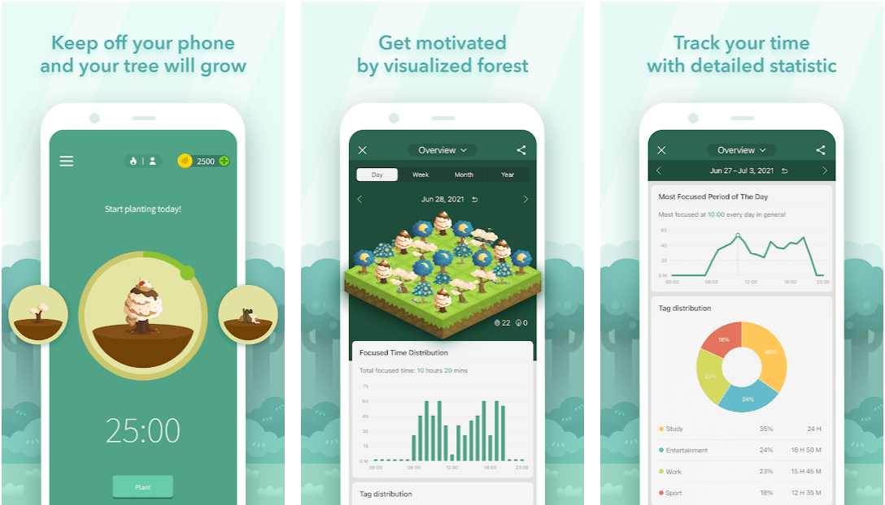
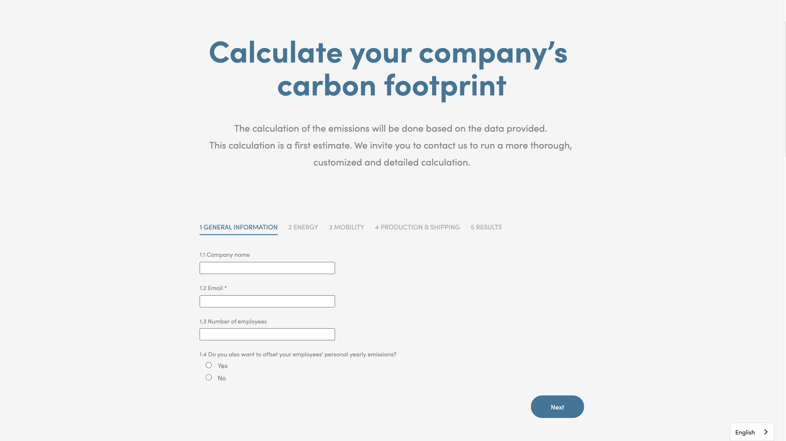

Forest Mobile App
The Forest mobile app helps users stay productive by letting them grow a virtual plant while they work or study. The plant grows as long as they don't touch their phone. This is similar to my project because it uses a virtual plant for positive reinforcement. This app has a clean UI and engaging graphics. I especially like the color scheme, which is both calming and representative of nature. The target audience is busy people who have trouble being productive. This somewhat overlaps with my project's target audience, which is busy individuals with little time to be environmentally conscious.
On a Mission's Carbon Footprint Tracker
On a Mission is an organization that helps companies calculate their carbon emissions and offers sustainable reforestation projects. Their carbon footprint calculator web page takes in information related to electricity, transportation, production and shipping, etc. and displays the company's total carbon emissions. They use a simple form to take in this data, organized into clear sections. This website is similar to my project because it helps people become conscious of their environmental impact. I have a lot to learn from this website about the different factors involved in measuring sustainability. This is also the most easy-to-use tool for carbon footprint tracking that I have ever found, because of its minimalistic UI and monochromatic color scheme. The form fields are very simple, and unlike the previous example, this website is not very graphics-heavy. The target audience for this website is a much older age group as compared to that of the Forest app.